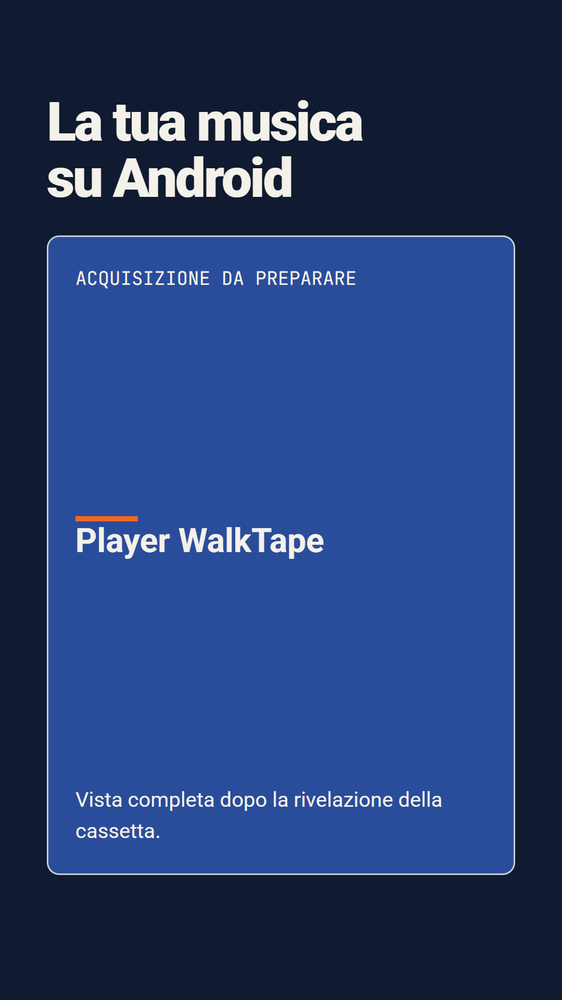

01: Premi Play
0.0 to 8.0s · posa a 5.5s
Player · RivelazioneIl dettaglio della cassetta si allarga al player completo. La posa mostra lo stato dopo la rivelazione.
Testi in sequenza: «Il piacere di una cassetta» → «La tua musica su Android».
Raccordo: la copertina conduce all'album della scena 2. Unico clic sulla prima pressione Play.